Chapter 1 Markdown 基础语法
标题
Markdown利用#来表示标题，#的个数越多，字体越小，最多可以有6级标题
|
|
这里注意，敲完#之后要先敲一个空格，之后再敲标题内容，这样才能识别为标题
强调
强调的方式有以下几种:高亮，加粗，斜体，斜体加粗，具体方法见下
|
|
这里请注意，加粗部分左右两边是两个下划线，斜体则是一个
列表
|
|
效果如下:
-
分点一
-
分点二
- 子分点一
- 子分点二
-
分点三
注意: -之后也要空一格再写内容(但我感觉这个用起来不太顺手)
链接
|
|
第一行这个没有鼠标悬停功能，第二行有。如果失败了注意检查括号，最好一次性敲好两个括号再加网址(被这个问题折腾的鼻青脸肿)
效果如下:（可以把鼠标移到上面看效果）
点进这种链接的方法是按下CTRL+点击鼠标
图片
与连接类似但是多在前面加一个感叹号!，方法如下
|
|

本地图片也可以，复制粘贴上来就好，他会自动生成代码
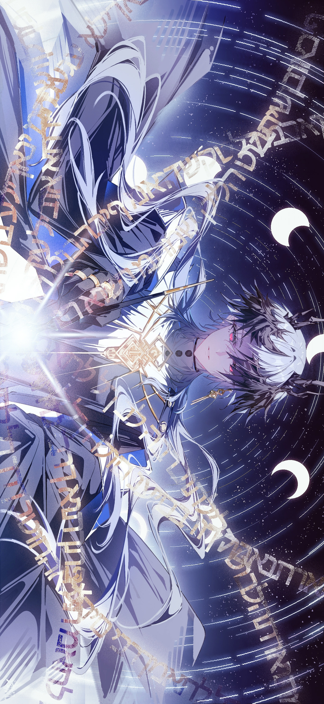
引用
|
|
效果如下:
To 莱茵:
早安!午安!晚安!
代码块
|
|
|
|
表格
这个可以手动打但是很麻烦,我一般不手打
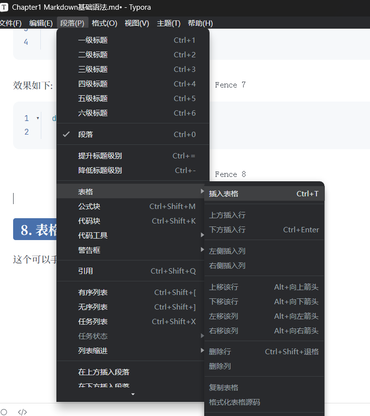
直接在这上面找就行
分割线
形式有两种
|
|
效果如下:
第一个是—，第二个是***,最后的分割线都长这样
公式
字母
希腊字母
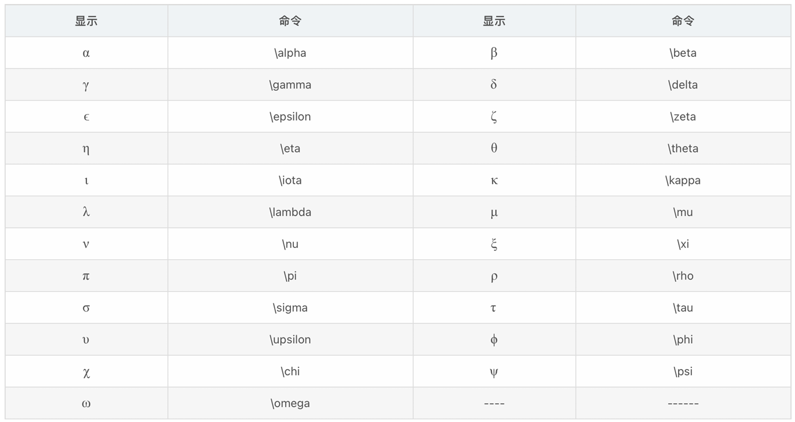
如果要大写希腊字母则大写首字母即可，例子如下:
|
|
效果如下:
$\Gamma$
$\gamma$
修饰
- 上划线$\overline a$,下划线$\underline a$
|
|
上划线不要line也可以，下划线好像不行
|
|
效果如下:
$\over a$
$\over adcd$
- 单个字母矢量$\vec {a}$，多字母矢量$\overline {abc}$后面这个其实就是上划线
|
|
- 多字母反向箭头$\overleftarrow {abc}$这个的代码如下:
|
|
-
波浪线$\tilde a$,还有多个字母的$\widetilde {abc}$,代码如下:
1 2$\tilde a$ $\widetilde {abc}$ -
尖头$\hat a$,多字母的情况是$\widehat {abc}$代码如下:
1 2$\hat a$ $\widehat {abc}$ -
圆弧$\overset{\LARGE{\frown}}{AB}$,代码有点复杂，具体如下:
1$\overset{\LARGE{\frown}}{AB}$ -
上标点$\dot a$和$\ddot a$代码如下:
1 2$\dot a$ $\ddot a$ -
删除线$\cancel {\vec C}$,代码如下
1$\cancel {\vec C}这里中间{}里面的和删除线语法无关，是矢量语法
$\cancel {其实我感觉还是obisidian好用哈哈哈，这个删除线真的很丑}$
-
各种箭头(我有点懒，直接上图吧):
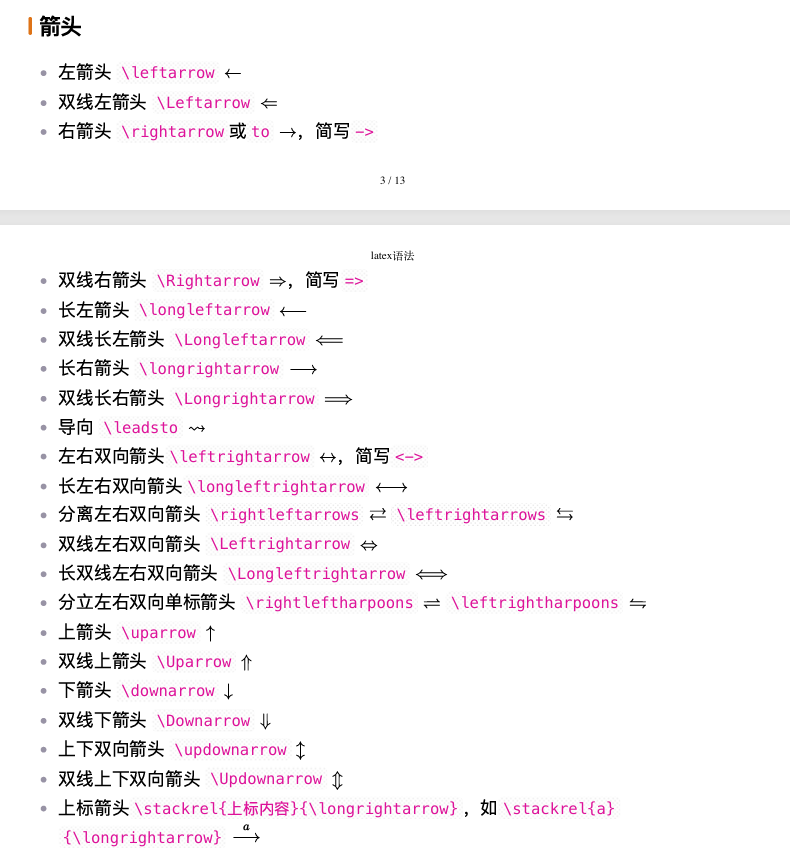
-
括号(个人感觉不常用，忘了来翻就行):
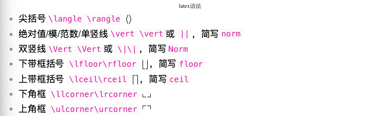
数学符号
运算符
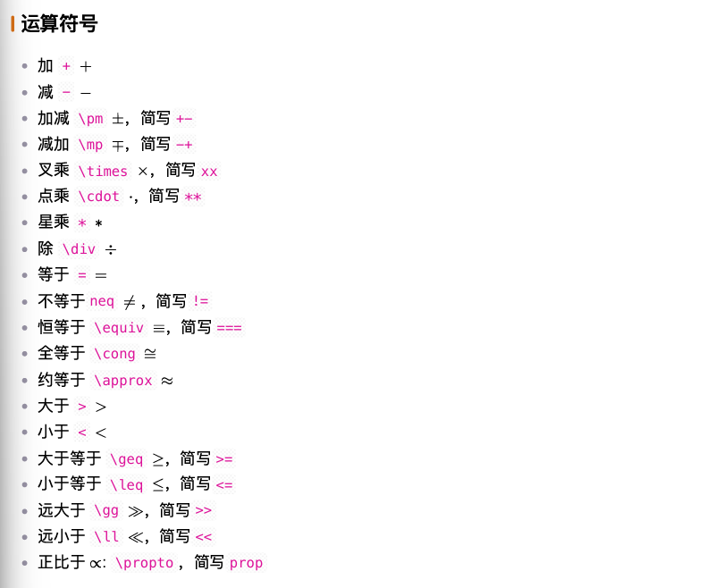
集合
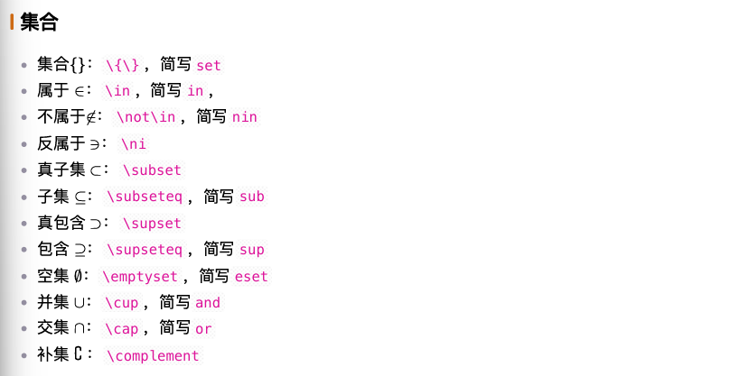
几何图形
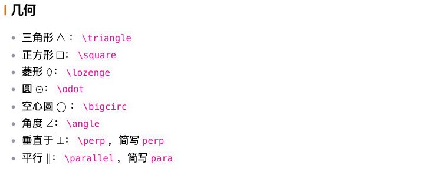
微积分与逻辑
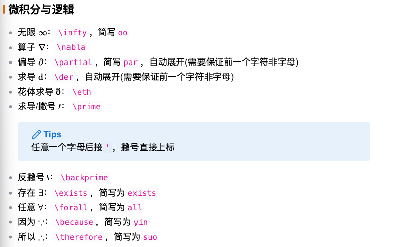
特殊运算
求和
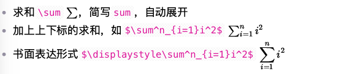
极限
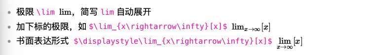
积分(这个可能比较常用)
|
|
效果是这样的:
$\int f(x)dx$
$\iiiint _{0}^{\infty}f(x)dx$
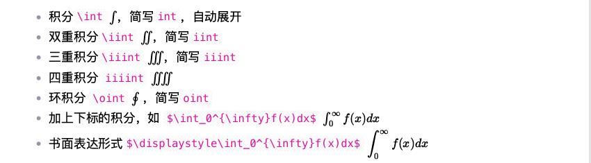
连乘
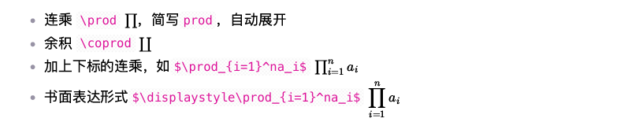
分式和根式
|
|
效果如下:
$\frac{公式一}{公式二}$
$\sqrt[x]{y}$
表达式
|
|
效果如下:
$1+1=2$
（虽然看起来很鸡肋，但是遇到字母多的时候还是挺有用的，不会有标红的下划线）
如果要居中:(其实你敲完两个$$之后Enter一下，后面两个自动会生成，在出现的框框里面写就行)
|
|
效果如下: $$ 1+1=2 $$ 如果有好几行都要居中，老是敲$$很麻烦，可使用如下方法:
|
|
效果如下: $$ \begin{split}1+1=2\2+2=4\4+4=8\end{split} $$ 也可以用&让指定位置对齐:
|
|
效果如下： $$ \begin{split}A&=B+C\&=C+D\&=E+F\end{split} $$
矩阵
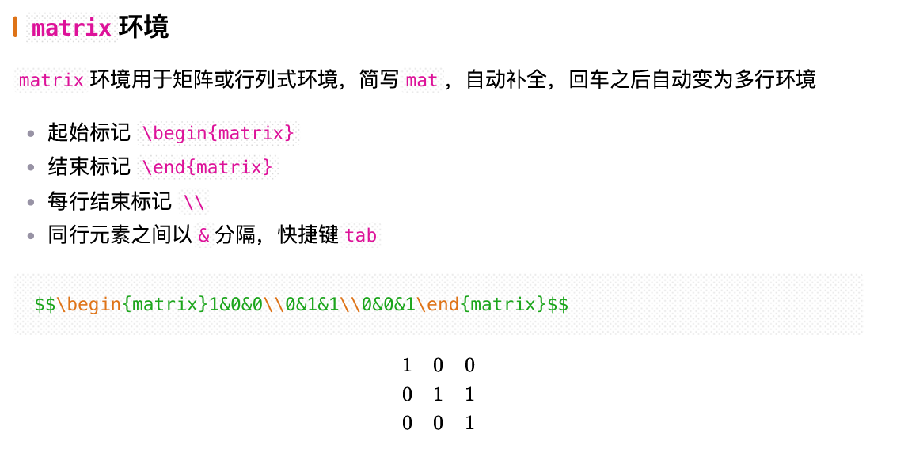
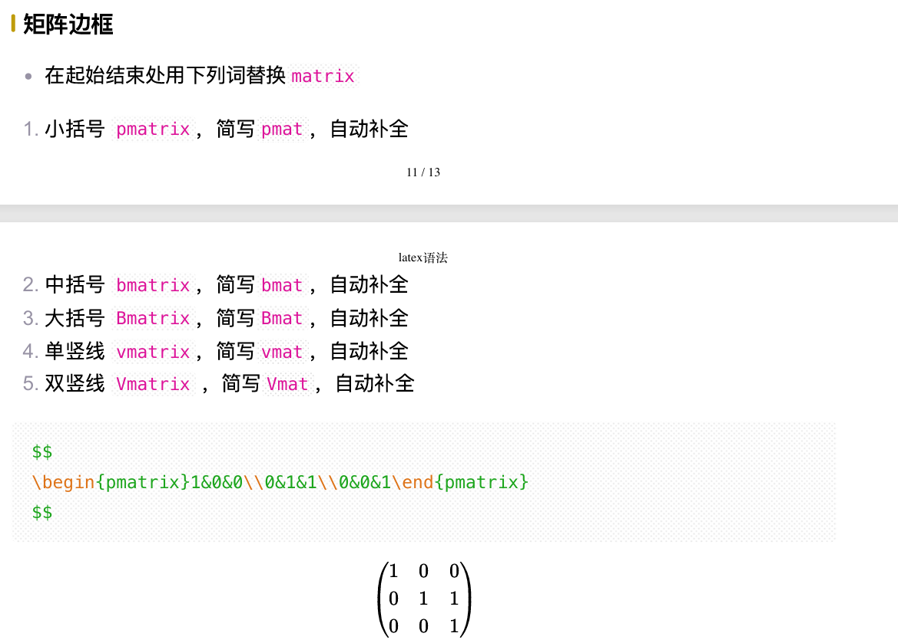
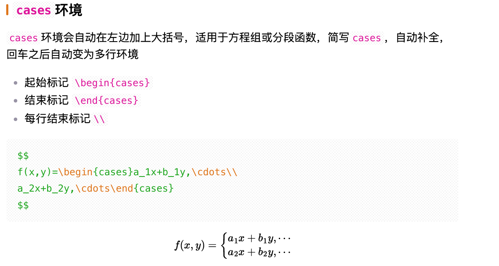